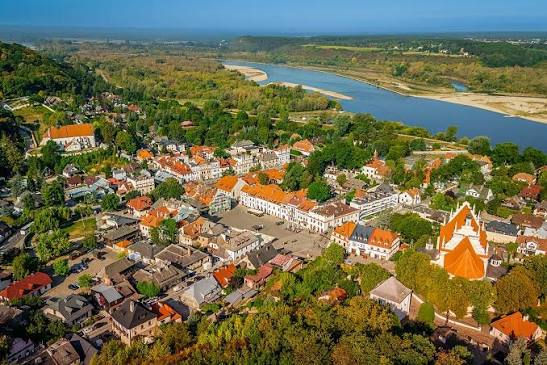
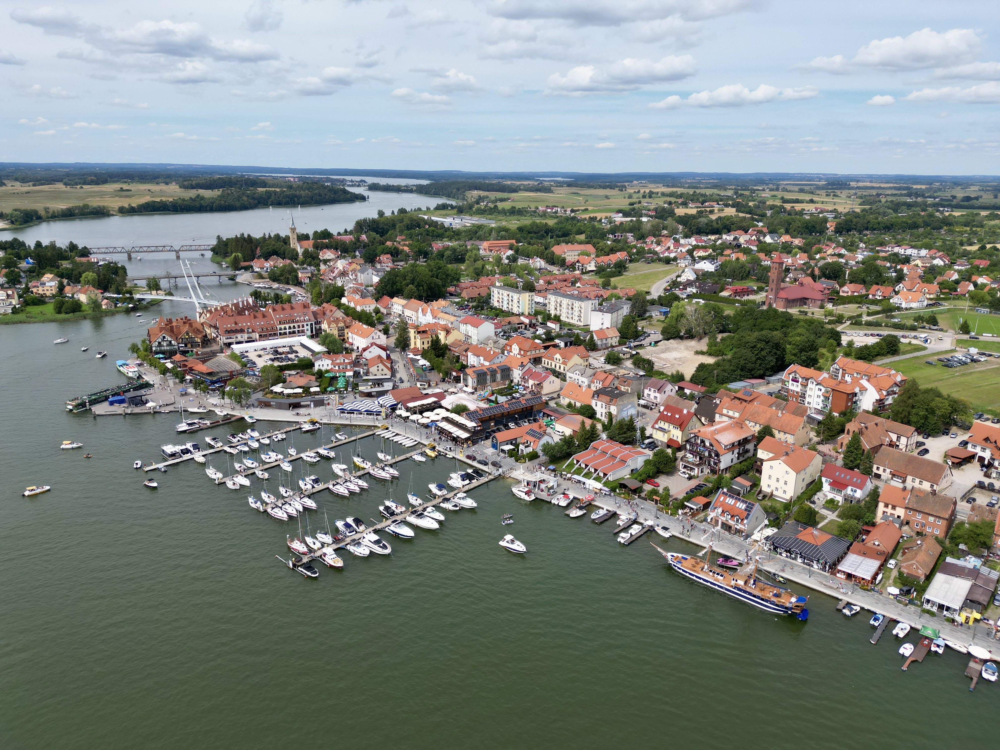

Kazimierz Dolny to szalenie urocze miasteczko położone nad Wisłą. Bliskość rzeki sprawia, że funkcjonuje również druga nazwa, z którą możecie się czasem spotkać, czyli Kazimierz nad Wisłą.

Mikołajki, położone nad Jeziorem Mikołajskim, łączącym się ze Śniardwami, to malownicza miejscowość o czerwonych dachach zabudowań. Pomimo typowo turystycznego charakteru i licznych hoteli, sklepów i restauracji, miasto zachowało swój urok.